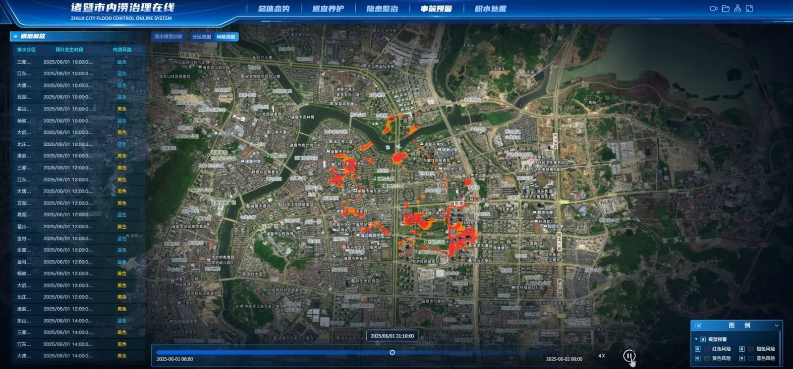
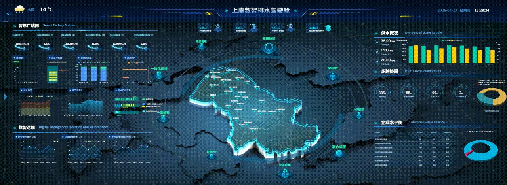
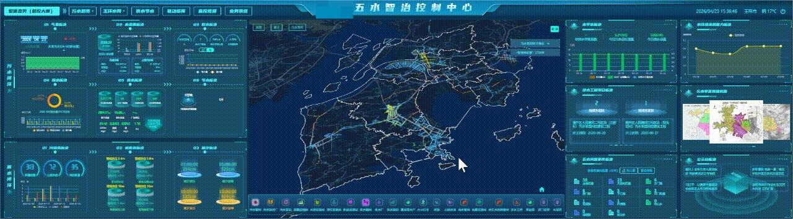
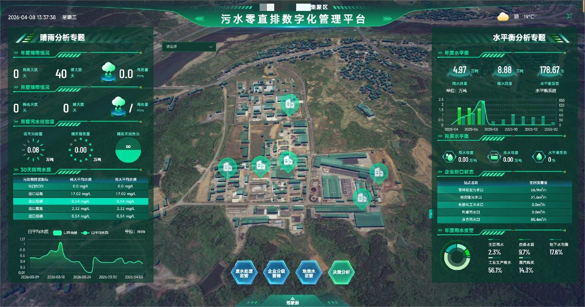

韧性城市
诸暨市韧性城市智慧管理中心
项目依托 GIS 技术深度融合地下普查数据，打造地上地下一体化空间数字底座，推动城市智慧管理从单点监管走向全域协同。
三维数字监管底座：融合地上地下设施数据，形成空间化、可视化的监管基础。
责任体系贯通：构建“政府督部门、部门管企业、企业管设施”的责任闭环。
风险感知网络：布设 240 个设备点位，结合算法分析与仿真模型，实现风险识别、评估预警和预测预报。
闭环处置机制：健全“发现、研判、派单、处置、复盘”全流程管控。
Cases · City Lifeline
从韧性城市智慧管理中心到数智排水、县域五水智治与园区零直排平台，沉淀城市生命线数字化建设的项目经验。
Coverage
浙江省内全覆盖
Footprint
全国业务遍布20余个省份
Scenario
韧性城市、排水、防涝、零直排
客户实践
围绕地上地下空间治理、排水系统监管、源网厂口河闭环、县域五水联动与长效运维，形成可复制的数字化交付路径。

韧性城市
项目依托 GIS 技术深度融合地下普查数据，打造地上地下一体化空间数字底座，推动城市智慧管理从单点监管走向全域协同。
三维数字监管底座：融合地上地下设施数据，形成空间化、可视化的监管基础。
责任体系贯通：构建“政府督部门、部门管企业、企业管设施”的责任闭环。
风险感知网络：布设 240 个设备点位，结合算法分析与仿真模型，实现风险识别、评估预警和预测预报。
闭环处置机制：健全“发现、研判、派单、处置、复盘”全流程管控。
智慧排水
作为浙江省住建厅试点、原五水办“五水共治一张图”试点案例，项目以“一屏统管”为抓手，打通排水系统信息资源壁垒。
智慧排水：发挥协同联动、互联互保效能，统一呈现排水运行态势。
智慧管网：通过物联监测与模型联合应用，动态诊断排水管网运行状态。
智能溯源：对污水排放进行全维度管理，发现问题自动预警、精准溯源。
智慧巡维：发布巡检任务计划，形成“厂、站、网、源”一体化运维闭环。


县域五水智治
围绕污水治理、水资源保障、河湖健康、防洪排涝、供水节水与联动指挥，构建县域水治理综合驾驶舱。
污水治理：覆盖来源、管网收集、泵站提升、污水处理、污泥处置和中水回用全流程。
水资源保障：从水源的量、质、用进行三位一体监管。
河湖健康：结合断面水质、河长制和工程管理实现健康评价。
防洪排涝：联动降水、水库、内涝点、应急闸站和物资情况，形成排涝闭环。
污水零直排
项目构建“源、网、厂、口、河”全链条在线监管体系，支撑园区污水零直排长效闭环管理。
全流程智慧监管：实现企业、管网、处理厂、排口及受纳水体全过程管控。
一体化数字台账：整合全域水务数据，建立设施账册、企业清单和环保管控一张图。
智能化成效评档：通过多维评价算法，对企业零直排成效量化评分并评级。
智慧化溯源预警：融合水平衡核算与 AI 溯源算法，保障治理成效长期稳定。

实践共性
围绕城市生命线建设，项目交付从现状调研、数据接入、平台建设、算法模型到运维闭环持续推进。
联系我们